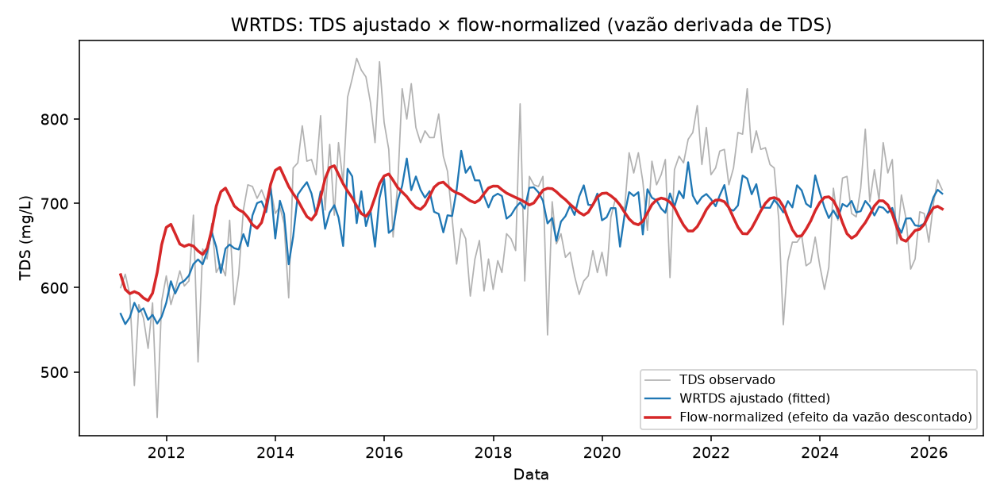
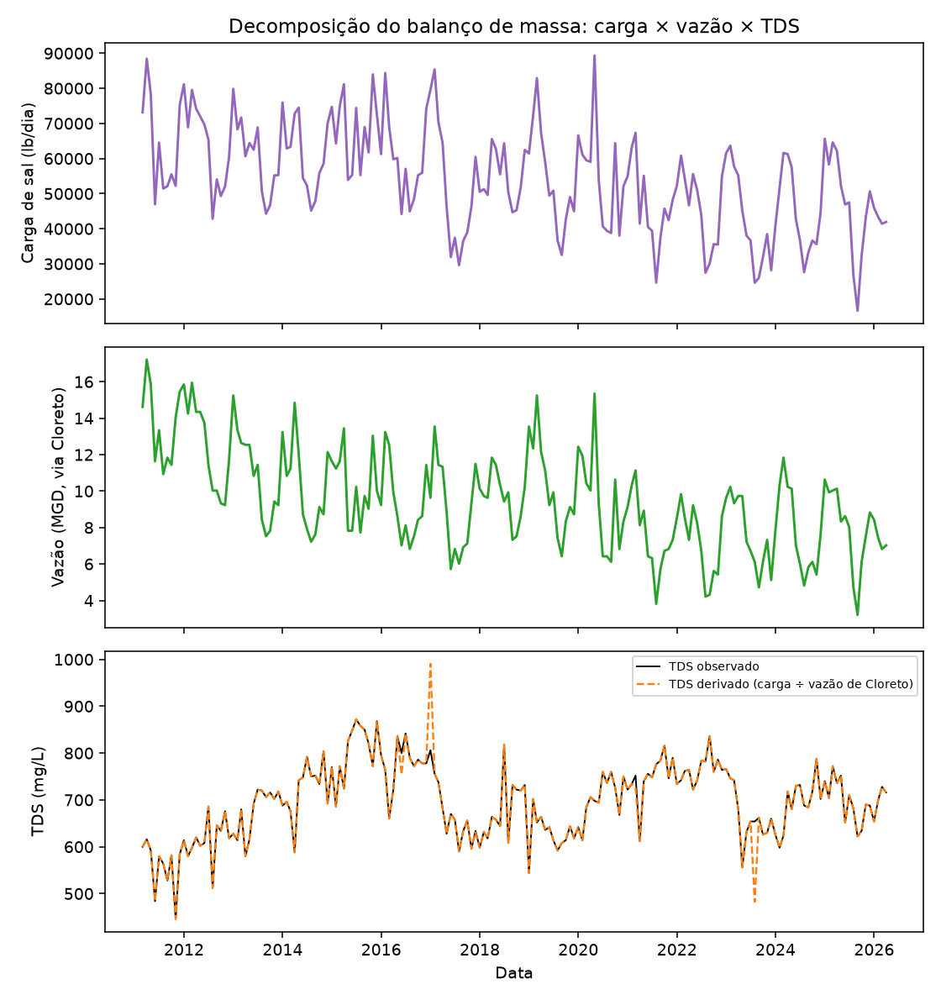

O mecanismo, confirmado de duas formas independentes
Objetivo desta lição: fechar a investigação causal. Depois de ver que o padrão é cíclico (0002) e sincronizado com seca (0003), esta lição mostra as duas provas quantitativas de que o mecanismo é diluição por vazão, não mais sal entrando — e onde fica o limite dessa conclusão.
Prova 1: WRTDS — a tendência quase desaparece ao descontar a vazão
WRTDS (Weighted Regression on Time, Discharge, and Season) é uma técnica consolidada em hidrologia para separar "quanto da tendência observada é efeito de vazão" de "quanto é tendência independente da vazão" (script_19_wrtds.py). A lógica: ajustar a série como função de tempo + vazão + sazonalidade, depois recalcular a previsão mantendo a vazão fixa na média histórica — essa versão "flow-normalized" mostra como a série teria se comportado se a vazão não tivesse mudado.

Figura do artigo (resultados.tex, linha 390): "WRTDS: TDS ajustado e flow-normalized (efeito da vazão descontado)."
Como ler este gráfico:
1. Três linhas: TDS observado (cinza, ao fundo, com ruído), o ajuste WRTDS "fitted" (azul — a mesma série, só suavizada pelo modelo) e a versão "flow-normalized" (vermelha, mais grossa — com o efeito da vazão descontado).
2. O que procurar: se a linha vermelha sobe muito menos (ou quase nada) comparada à azul/cinza, isso significa que a maior parte da subida observada é explicada pela vazão variando — não por mais sal entrando no sistema.
3. O número que fecha a leitura: a tendência bruta de log(TDS) é +0,582%/ano (p=0,0056, significativa). Depois da flow-normalização, cai para -0,133%/ano (p=0,064, não significativa). Quase toda a tendência aparente desaparece.
4. Pergunta de banca: "WRTDS normalmente é usado para rios/bacias, por que serve aqui para um efluente de ETE?" Resposta: a lógica estatística (separar tendência temporal de tendência induzida pela vazão) é genérica — não depende de ser rio ou efluente, só exige vazão e concentração medidas no mesmo ponto/período, que é exatamente o caso aqui (vazão reconstruída na Lição 0001/0002 via D-12).
🔧 Como funciona: WRTDS
WRTDS (Weighted Regression on Time, Discharge, and Season)
Regressão ponderada localmente de log(TDS) sobre tempo, log(vazão) e sazonalidade (kernel tricúbico — pontos mais próximos pesam mais). A "flow-normalização" recalcula a previsão mantendo a vazão fixa na média histórica em cada instante, isolando quanto da tendência é só efeito de vazão variando.
Figura do artigo (resultados.tex, linha 397): "Checagem de circularidade: flow-normalização com vazão derivada de TDS vs. de Cloreto."
Como ler este gráfico — e por que ele existe:
1. Problema a resolver: a vazão usada acima foi reconstruída a partir do próprio TDS (identidade lb/dia = mg/L × vazão × 8,34). Usar essa vazão para "explicar" o TDS seria circular — like usar o resultado para provar o resultado.
2. Solução: refazer o WRTDS inteiro com uma vazão reconstruída a partir do Cloreto em vez do TDS — uma variável diferente, medida na mesma amostra física, mas algebricamente independente do valor de TDS.
3. O que procurar no gráfico: duas linhas (vermelha = flow-normalized via vazão de TDS; verde tracejada = via vazão de Cloreto) quase perfeitamente sobrepostas. Se elas coincidem mesmo vindo de uma vazão calculada de forma totalmente independente, o resultado não é um artefato circular.
4. Números que confirmam: correlação r=0,998 entre as duas versões, diferença de apenas 0,024 pontos percentuais/ano na tendência (-0,133%/ano via TDS vs -0,158%/ano via Cloreto, p=0,033 nesta última).
Por que o WRTDS foi refeito com vazão derivada do Cloreto, e não só do TDS?
Prova 2: balanço de massa — carga de sal caindo, não subindo
O WRTDS mostra que a vazão explica a tendência estatisticamente. O balanço de massa (script_20_balanco_massa.py) mostra o mecanismo físico por trás: decompõe o TDS nos dois ingredientes que o compõem — quanto sal entra (carga, lb/dia, medida direta) e quanto de água dilui esse sal (vazão, via Cloreto).

Figura do artigo (resultados.tex, linha 410): "Decomposição do balanço de massa: carga de sal, vazão e TDS derivado vs. observado."
Como ler este gráfico — 3 painéis empilhados, mesmo eixo X (tempo):
Painel 1 (carga de sal, lb/dia): quanto sal, em peso, sai da estação por dia — caindo a -3,20%/ano (p<0,0001).
Painel 2 (vazão via Cloreto, MGD): quanta água efluente sai por dia — também caindo, a -3,85%/ano (p<0,0001), um pouco mais rápido que a carga.
Painel 3 (TDS observado vs. derivado): o TDS real (preto) contra o TDS recalculado a partir só dos painéis 1 e 2 (carga ÷ vazão × 8,34, linha laranja tracejada). Se as duas linhas seguem juntas, a identidade física está confirmada contra dados reais, não só na teoria.
A virada de raciocínio nesta figura:como os dois ingredientes (carga e vazão) caem juntos, e a vazão cai um pouco mais rápido, o TDS = carga/vazão sobe — mesmo com MENOS sal entrando. É isso que "diluição, não mais sal" significa em números: o numerador cai, mas o denominador cai mais rápido, então a razão sobe.
🔧 Como funciona: balanço de massa
Balanço de massa
Não é um modelo estatístico ajustado à série de TDS — é uma identidade física direta: TDS = carga(lb/dia) ÷ (vazão(MGD) × 8,34). Decompõe a tendência nos dois componentes físicos medidos separadamente (quanto sal entra, quanto de água dilui), em vez de inferir o mecanismo indiretamente.
Figura do artigo (resultados.tex, linha 417): "Validação histórica: TDS observado vs. TDS derivado (carga ÷ vazão de Cloreto)."
Como ler este gráfico de dispersão:
1. Eixo X = TDS observado (mg/L); eixo Y = TDS derivado da identidade (carga/vazão); cada ponto é um mês. A linha tracejada diagonal é y=x — o "acerto perfeito".
2. Quanto mais os pontos colam na diagonal, melhor a identidade física explica os dados reais. Aqui: RMSE=19,1 mg/L, r=0,973, R²=0,941 — um ajuste forte, mas não perfeito (há ruído de medição e amostragem entre carga/vazão/TDS que não cancela 100%).
3. Checagem de tautologia (não tem gráfico próprio, mas é citada no texto): repetir essa mesma validação usando a vazão derivada do próprio TDS (em vez da de Cloreto) dá R²=1,000000 exato. Isso confirma que essa versão alternativa seria uma identidade algébrica disfarçada de validação — não prova nada, só reafirma a própria fórmula usada para calculá-la. Por isso a validação "de verdade" (a que vale citar) é a que usa vazão de Cloreto, com R²=0,941 — imperfeito, mas real.
Por que a validação histórica com vazão derivada do próprio TDS dá R²=1,000000 exato?
O limite da conclusão: extrapolar essas retas é implausível
O achado é físico e robusto dentro do período observado — mas o artigo registra honestamente um achado negativo: extrapolar linearmente (Theil-Sen) a carga e a vazão para +10/+15/+20 anos cruza valores fisicamente impossíveis.
Horizonte
Vazão projetada
TDS derivado
+10 anos
14% da capacidade nominal
993 mg/L
+15 anos
5% da capacidade nominal
1.724 mg/L
+20 anos
negativa (impossível)
1.557 mg/L (não-monotônico)
Fonte: resultados.tex, parágrafo "Achado negativo, registrado e não escondido" (linha 422).
Por que isso importa para a banca:
1. Vazão não pode ser negativa — isso por si só prova que a extrapolação linear simples não é um modelo físico válido para horizontes longos.
2. O TDS derivado nem sobe de forma monotônica (993→1.724→1.557) — outro sinal de que a extrapolação linear colapsa fora da faixa observada.
3.Isso não invalida o mecanismo de diluição (confirmado dentro do período observado) — só invalida usar retas lineares de carga/vazão para prever 20 anos no futuro. É exatamente o que motiva a próxima etapa do projeto: substituir a extrapolação linear implausível por uma projeção condicionada a cenários de seca via PDSI (script_21_cenarios.py — fora do escopo desta lição, mencionar à banca se perguntarem "e a previsão de longo prazo, então?").
Recall sem olhar: as duas provas independentes do mecanismo de diluição, e o que cada uma mede.
1. WRTDS — mede estatisticamente: tendência bruta de log(TDS) +0,582%/ano (significativa) cai para -0,133%/ano (não significativa) ao descontar a vazão. Checagem de circularidade com vazão de Cloreto confirma (r=0,998 entre as duas versões). 2. Balanço de massa — mede fisicamente: carga de sal cai -3,20%/ano, vazão cai -3,85%/ano (ambos p<0,0001) — a vazão cai mais rápido que a carga, então a razão (TDS) sobe mesmo com menos sal entrando. Validação histórica R²=0,941 (não tautológica, via vazão de Cloreto). As duas convergem na mesma conclusão por caminhos matemáticos diferentes — é isso que torna o argumento causal forte, não só uma correlação isolada.
Ficou alguma dúvida? Pergunte ao agente (Claude Code) agora — ele pode detalhar a formulação do WRTDS (regressão ponderada por tempo/vazão/estação), explicar por que R²=0,941 e não mais alto no balanço de massa, ou simular a pergunta "e se a vazão fosse medida direto, sem precisar reconstruir?".